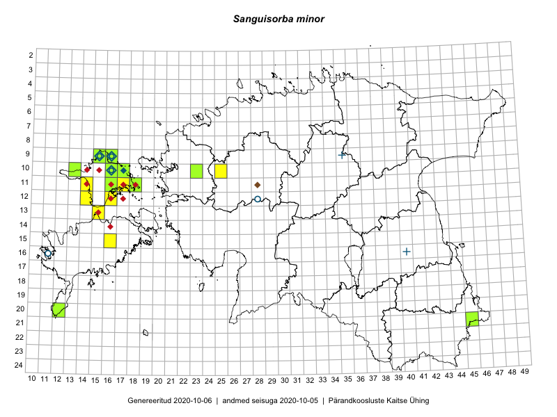

Sanguisorba minor
Uuendatud: 2016-12-02
Kaardile koondatud taksonid: Sanguisorba minor Scop.

Kaart põhineb 29 kirjel, neist vaatlusi 28 ja eksemplare 1. Taksonit on leitud 11 ruudust.
Kuvatud viited 20 esimesele andmebaasikirjele, ülejäänud PlutoFis
- Peedu Saar, Toomas Kukk: 2015-05-27: 09-15: ala
- Peedu Saar, Toomas Kukk: 2015-05-27: 09-16: ala
- Peedu Saar, Toomas Kukk: 2015-05-26: 10-16: ala
- Peedu Saar, Toomas Kukk: 2015-05-26: 10-17: ala
- Toomas Kukk, Eerik Leibak: 2015-08-11: 09-15: ala
- Toomas Kukk, Eerik Leibak: 2015-08-11: 09-15: GPS punkt
- Toomas Kukk, Peedu Saar: 2015-05-26: 10-17: GPS punkt
- Toomas Kukk, Peedu Saar: 2015-05-26: 10-16: GPS punkt
- Toomas Kukk, Peedu Saar: 2015-05-26: 10-16: GPS punkt
- Toomas Kukk, Peedu Saar: 2015-05-27: 09-16: GPS punkt
- Toomas Kukk, Peedu Saar: 2015-05-27: 09-16: GPS punkt
- Toomas Kukk, Peedu Saar: 2015-05-27: 09-16: GPS punkt
- Toomas Kukk, Peedu Saar: 2015-05-27: 09-15: GPS punkt
- Thea Kull: 2015-06-15: 10-16: ala
- Eeva-Maria Jeletsky, Tarmo Niitla: 2015-06-22: 11-16: ala
- Aat Sarv: 2015-05-31: 10-25: ala
- Meeli Mesipuu, Timo Luhamäe: 2015-05-26: 11-18: ala
- Timo Luhamäe, Meeli Mesipuu: 2015-05-26: 11-18: GPS punkt
- Meeli Mesipuu: 2016-05-28: 11-18: GPS punkt
- Toomas Kukk, Peedu Saar: 2016-05-08: 09-16: ala